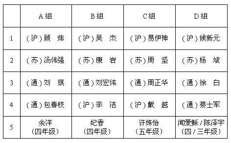

23－24日活动方案设想
#1 23－24日活动方案设想作者：黄药师 发表时间：2007-6-21 0:02:31
截止到目前为止一共有16名成人选手和3名学生选手参加。为了能让活动有组织进行，和网上朋友讨论以后设想下面方案，大家看看如何：
16成人选手分成四个组，每组4人，另外每组再配一名学生，合计5人。小组进行单循环赛，每人每局40分钟，超时判负。每轮之间休息10分钟。通过猜子决定先后手。
每组第1、2名将分别进行四人循环赛，其余可以自行组合交流。其他一些常见规则大家都知道的，不再说明了。
特别说明：凡是有学生和成人的比赛，学生一律先手执黑，不限制学生的开局，成人也不允许提出交换，学生无需二打，若和棋算学生胜，但谁时间耗尽谁判负。（要给小朋友占点便宜，五子棋又不能让子，哈哈！）
分组情况：

对阵顺序：
第一轮：1对2 3对4 5轮空
第二轮：1对3 2对5 4轮空
第三轮：1对5 2对4 3轮空
第四轮：1对4 3对5 2轮空
第五轮：2对3 4对5 1轮空
23日下午就进行小组赛，24日上午进行各组第一名循环赛和各组第二名循环赛。无比赛的选手可以自己组织比赛交流，当然也可以来点娱乐节目，比如一个人挑三个或者更多的小朋友！哈哈
当然了，如果临时有选手要加入，我们可以重新在分组。
大家提提意见，方便活动进行。
#2 Re:23－24日活动方案设想作者：小丸.net 发表时间：2007-6-21 9:26:18
我今天早上上班时想到的：
１．台次不变，重新抽签，把每一个台次重新分ABCD四组，这样可能会公平些
２．每轮小组赛肯定有一个台次轮空，建议这时轮同台次的A VS B ,C VS D，这样交流的结果也计入该组的积分，增加每个人的交流机会和趣味性。比如说，第一轮，轮空的是第５台，那这一轮就是余洋VS纪香，许姝怡VS闻爱稣，这样的积分，这样的积分，也计入该组总分。
３.南通晚上没有什么好玩(晚上出门也不方便)，我建议把第２４号的循环赛安排到２３号晚上，这样，２４号可以自由安排时间，有兴趣的朋友也可以到南通市里去玩玩。
#3 Re:23－24日活动方案设想作者：行云流水 发表时间：2007-6-21 9:41:33
客随主便。基本没有意见。提个建议：上海棋手划分到A—D组是可以的，但是接下去谁进哪个组，可能通过抽签决定更好些。#4 Re:Re:23－24日活动方案设想作者：黄药师 发表时间：2007-6-21 17:23:13
引用：好的，抽签！哈哈，打世界杯了！
原文由 行云流水 发表于 2007-6-21 9:41:33 :
客随主便。基本没有意见。提个建议：上海棋手划分到A—D组是可以的，但是接下去谁进哪个组，可能通过抽签决定更好些。
#5 Re:Re:23－24日活动方案设想作者：黄药师 发表时间：2007-6-21 17:27:14
引用：强度很大嘛！
原文由 小丸.net 发表于 2007-6-21 9:26:18 :我今天早上上班时想到的：
２．每轮小组赛肯定有一个台次轮空，建议这时轮同台次的A VS B ,C VS D，这样交流的结果也计入该组的积分，增加每个人的交流机会和趣味性。比如说，第一轮，轮空的是第５台，那这一轮就是余洋VS纪香，许姝怡VS闻爱稣，这样的积分，这样的积分，也计入该组总分。
#6 Re:23－24日活动方案设想作者：行云流水 发表时间：2007-6-21 18:06:05
如果不计较名次也无所谓。否则本来是同组单循环，再加上组外对抗成绩，难免有不公平因素。
#7 Re:23－24日活动方案设想作者：黄药师 发表时间：2007-6-21 19:13:50
就排个1、2、3吧！其他的都不排了，交流为主吧！我想请顾炜老师给小朋友们讲讲课！
#8 Re:23－24日活动方案设想作者：黄药师 发表时间：2010-8-29 21:06:14
挖了个老帖子！